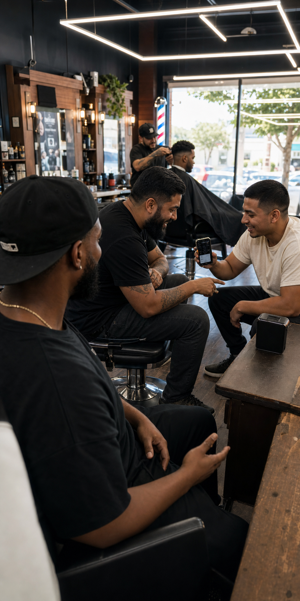

01
01Something to drink?
A beverage gets offered. The conversation starts before the cape goes on.
24 E 10th Street · Downtown Tracy
Good music in the room, somebody stopping through, and a crew that makes the shop feel like family.

02 / Walk in
 01
01A beverage gets offered. The conversation starts before the cape goes on.

02The soundtrack matters. So does laughing across the room while the work gets done.
 03
03Friends, families, and regulars move in and out. It feels alive because it is.
03 / Meet the crew
Pick a card to meet the crew. The people behind the chairs are what give Tenth Street its character.


Not sure who to choose? Start with the shop and find the service and availability that fit.
See availability04 / The work
Modern fades, classic shape, beard work, hot towel shaves, and straight razor line-ups—built around the person in the chair.


05 / At the chair

06 / Come through